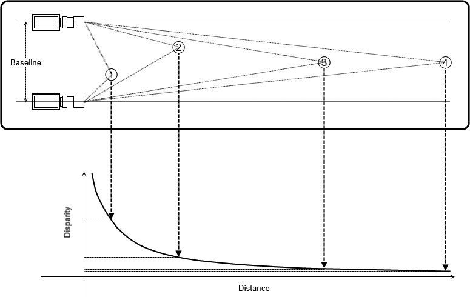

双目相机原理¶
立体成像概述¶
我们对双眼的立体成像能力非常熟悉，但是在计算机软件中，我们可以模仿这种能力到什么程度呢？实际上，计算机是通过寻找两个成像仪上的对应点来完成这个任务。其原理是：查找某个点在两张图片的对应点，通过其和摄像机基线之间的距离进行计算，可以得到这个点的三维位置。尽管两张图片的对应点的搜索计算量比较高，但我们可以利用几何知识，限定搜索的范围，降低计算量。因此，使用双目相机进行立体成像包括以下4个步骤：
- 去畸变：使用数学方法消除径向和切向的畸变
- 机位标定：调整两个相机的角度和其之间的距离，保证两个相机输出的是帧行对齐的图像，尽可能保证两个图像是共面的。
-
匹配：在左右相机图像中找到相同的特征，此步骤可以输出视差图，视差是指左右摄像机观察得到的相同特征在x方向上的差值： x_l - x_r
-
重投影：如果相机的位置关系已知，则可以通过三角测量法将视差图像转换成距离，这一步骤称之为重投影，输出为一个深度图
三角测量模型¶
假如我们有一个这样的理想装置：一个完美的无畸变、已对准、已测量好的系统，两个摄像机的图像平面彼此完全共面，具有完全平行的光轴（从投影中心O发出，通过主点c的一条射线），他们之间的距离是已知的T，并且具有相等的焦距：f_l=f_r，且假设主点 c^{left}_x , c^{right}_x 已经被校准为在其各自的图像中具有相同的像素坐标。
假设我们在物理世界中找到一个点P，在左右图像上的成像点为p_l和p_r，对应的横坐标为x_l和x_r，在此种简化的情况下，我们可以发现深度Z和视差 x_l - x_r 成反比。即越近的图像，视差越大。
由于深度与视差成反比，且显然，其之间存在非线性的关系，当视差趋近于零时，微小的视差变换会造成很大的深度变换。且当视差较大时，微小的视差变化不会对深度有太大的改变。则可得出以下结论：双目立体视觉系统只有在物体和摄像机距离较近时，才有比较高的深度分辨率。如下图所示：

- 下图为OpenCV立体视觉坐标系
用于已进行去畸变的相机，图像左上角为像素坐标系原点，两个图像平面的行与行对齐，整个双目摄像机的坐标系以左目相机的投影中心为原点，采用右手坐标系法则。